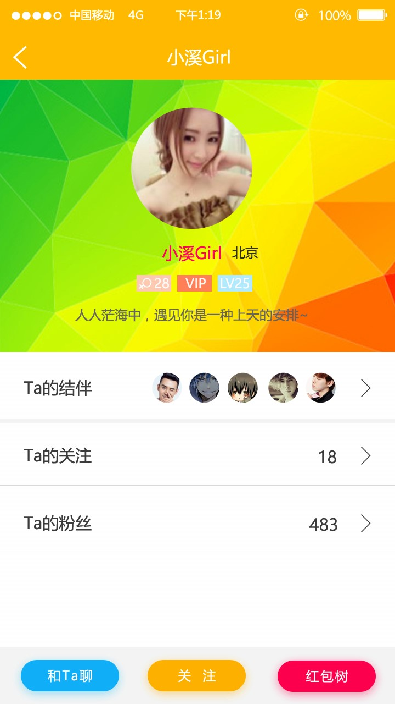
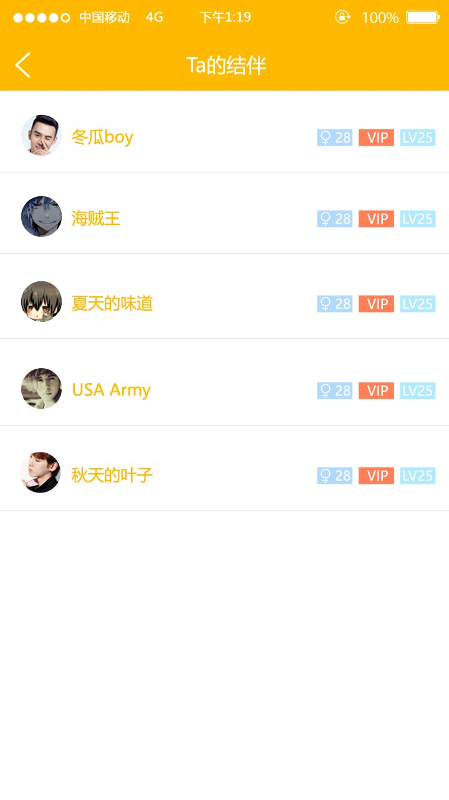

遇见页面----说明；
交互说明：
1.用户可以左滑右滑，左滑是不关注，右滑是喜欢关注，即关注了该用户（下面的两个按钮也是一样的交互）；
2.后台根据用户的筛选条件从用户库中拉去最近3天活跃的用户（时间定为3天，后期随着用户量和活跃的增加，时间会逐步缩小。这样做的好处在于能够加大用户沟通的时效性和成功率。拉取的用户以活跃时间进行排序，最近的排在最前面）；
3.点击图片进入个人主页；
性别筛选条件：
当用户进入遇见的页面的时候，默认为用户性别的异性选项。用户也可以选择其它，选项保存在本地，选项有不限、只看男、只看女；
个人主页页面----说明；
交互说明：
1.用户信息包含头像、昵称、城市、年龄、是否VIP、用户等级；
2.显示用户的结伴（显示最新的前5个结伴），用户的关注、用户的粉丝，点击进入各个页面，列表排序是按照时间，最新的排在最前面；
3.底部有3个按钮，分别为“和Ta聊”，“关注”，“红包树”；
• 点击“和Ta聊”进入聊天页面；
• 点击“关注”变为“已关注”，再次点击变为“关注”；
• 点击“红包树”进入他的红包树页面；
注意：
• 所有列表页面的交互都是下拉到顶部刷新，上拉到底部加载，每次加载20条信息；
• 所有操作凡是请求数据的都应该先判断网络情况，如无网络则提示“请检查网络连接~”